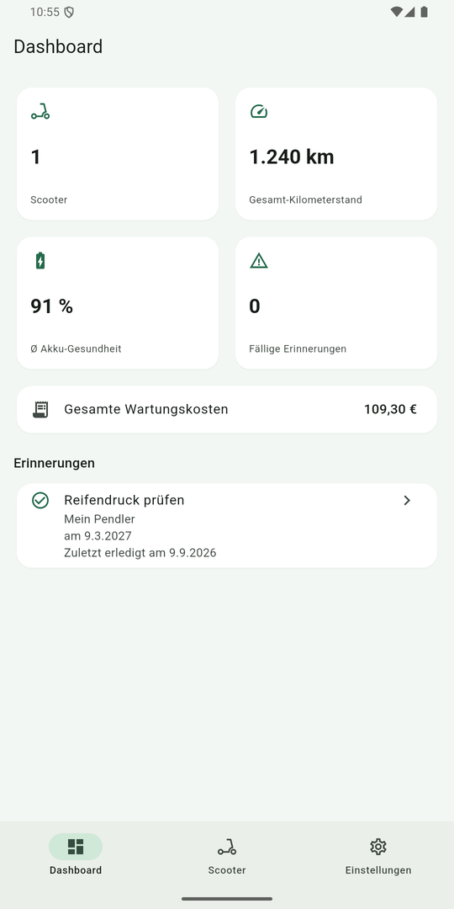
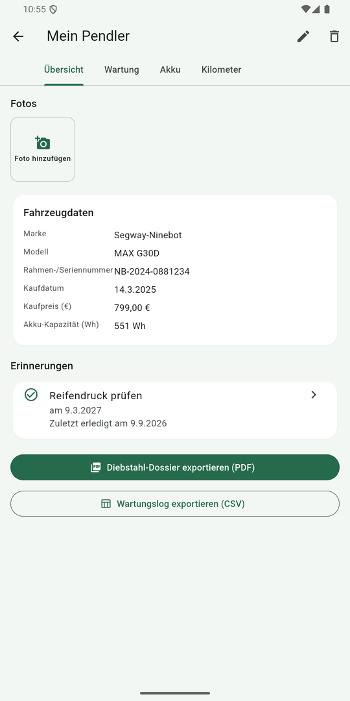
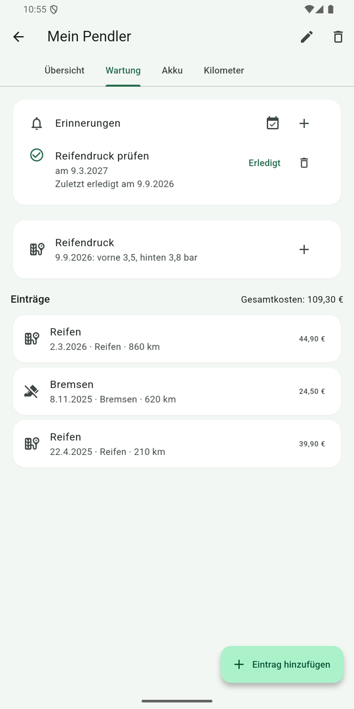
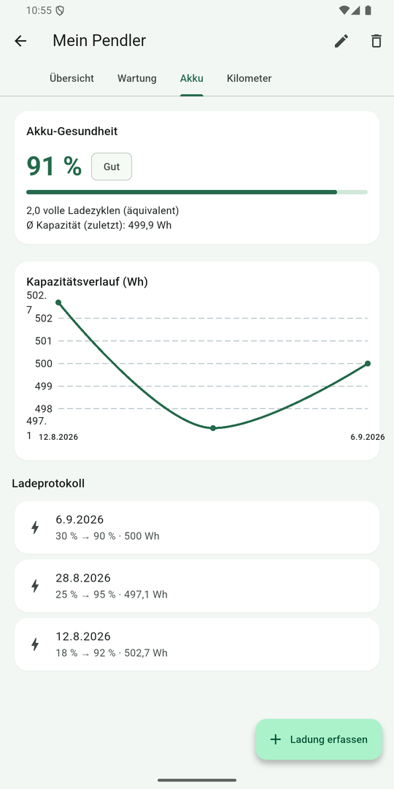
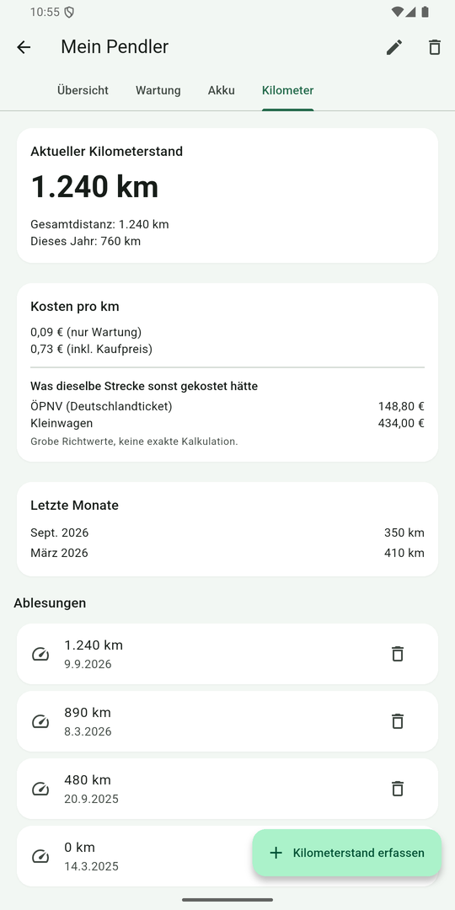
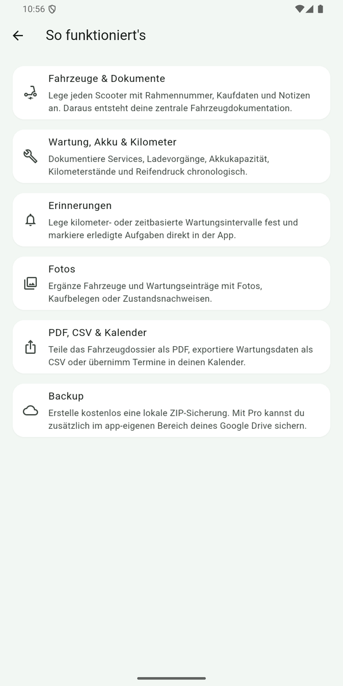

Was kostet dich dein Scooter pro Kilometer?
ScootKeeper rechnet aus deinen Wartungskosten und Kilometerständen die Kosten pro Kilometer aus – und stellt sie den Kosten derselben Strecke mit ÖPNV oder Auto gegenüber. Dieselbe Rechnung kannst du hier direkt ausprobieren.
Die Vergleichswerte sind grobe Richtwerte zur Einordnung, keine tagesaktuelle Kalkulation: ÖPNV 12 ct/km (Deutschlandticket bei angenommenen rund 500 km im Monat), Auto 35 ct/km (ADAC-Kostenschätzung für einen Kleinwagen inklusive Wertverlust, Versicherung, Kraftstoff und Wartung).
Wie gesund ist dein Akku noch?
Aus einem Ladevorgang – geladene Energie und Ladestand vorher/nachher – rechnet ScootKeeper die tatsächliche Kapazität hoch und vergleicht sie mit der Nennkapazität deines Akkus. Auch diese Rechnung kannst du hier direkt ausprobieren.
Ladebereiche unter 10 Prozentpunkten sind zu ungenau für eine Hochrechnung und liefern in der App bewusst kein Ergebnis. Liegen gar keine Kapazitätsdaten vor, schätzt die App stattdessen über die Zyklenzahl (rund 4 % Verlust je 100 Vollzyklen, nach unten auf 50 % begrenzt). Beides sind Schätzwerte, keine Labormessung.
Funktionen
Fahrzeugprofile
Mit Rahmennummer, Kaufdaten und Notizen – die Basis deiner Fahrzeugdokumentation.
Servicehistorie
Wartungseinträge mit Kosten und Kilometerstand, lückenlos nachvollziehbar.
Akku & Kilometer
Ladevorgänge, Kilometerstände und Reifendruck dokumentieren.
Erinnerungen
Kilometer- und zeitbasierte Erinnerungen für Wartung und Pflege.
Fotos & Belege
Fotos und Kaufbelege zu Fahrzeugen und Einträgen hinterlegen.
Fahrzeugdossier als PDF
Alle Daten gebündelt teilen – etwa gegenüber Polizei oder Versicherung.
CSV & Kalender
Wartungsdaten als CSV exportieren, Termine in den Kalender übernehmen.
Lokale Sicherung
Kostenlose ZIP-Sicherung aller Daten und Fotos, speicherbar oder teilbar.
Papierkorb
Gelöschte Scooter bleiben 30 Tage wiederherstellbar – samt Einträgen und Fotos.
Sicherung importieren
Die lokale ZIP-Sicherung lässt sich jederzeit wieder einlesen – auch auf einem neuen Gerät.
App-Sperre
Optional per Fingerabdruck, Gesicht oder Geräte-PIN – ohne eigenes Passwort.
Sechs Sprachen
Deutsch, Englisch, Französisch, Italienisch, Spanisch und Portugiesisch.
Einblicke






Datenschutz
ScootKeeper funktioniert ohne Konto und ohne eigenen Server. Deine Einträge werden lokal auf deinem Gerät gespeichert. Es gibt keine Werbung, kein Tracking und keine Weitergabe deiner Daten.
Damit Impressum und Datenschutzerklärung aktuell bleiben, lädt die App diese Texte höchstens einmal täglich von GitHub. Dabei wird technisch bedingt deine IP-Adresse an GitHub übertragen; App-Inhalte werden dabei nicht übermittelt. Ohne Internetverbindung werden die mitgelieferten Fassungen angezeigt.
Die kostenlose lokale ZIP-Sicherung kann über eine App deiner Wahl gespeichert oder geteilt werden. Mit Pro kannst du deine Daten zusätzlich in deinem eigenen Google-Drive-Konto sichern – verschlüsselt übertragen (TLS) und in einem app-eigenen, für andere Apps unsichtbaren Bereich gespeichert. Nur du hast Zugriff; wir erhalten deine Daten nicht.
Kosten und Transparenz
ScootKeeper Pro ist ein Abo und aktuell als „Bald verfügbar“ gekennzeichnet. Es ergänzt das kostenlose lokale Backup um die komfortable Sicherung in Google Drive. Alle übrigen hier gezeigten Funktionen sind kostenlos nutzbar.
Keine Vermittlung, keine Provision. ScootKeeper vermittelt keine Produkte oder Dienstleistungen und enthält keine Affiliate- oder Partnerlinks. Es fließt keine Provision, und es gibt keine Werbepartner. Die App verdient ausschließlich über das optionale Pro-Abo.
Hinweis
ScootKeeper ist ein Hilfsmittel zur Eigenorganisation und ersetzt keine fachliche Wartung durch eine Werkstatt. Die Kostenvergleiche auf dieser Seite dienen der groben Einordnung und sind keine verbindliche Kalkulation.